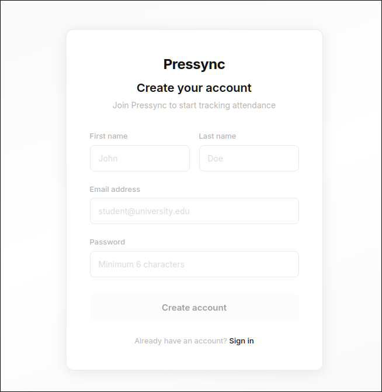
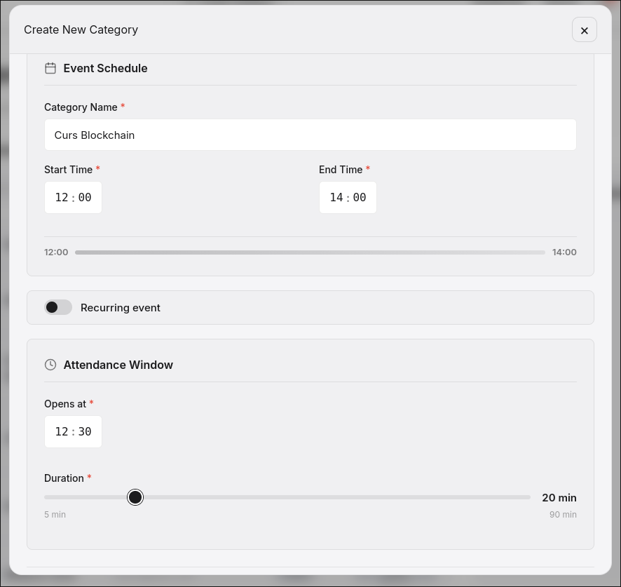
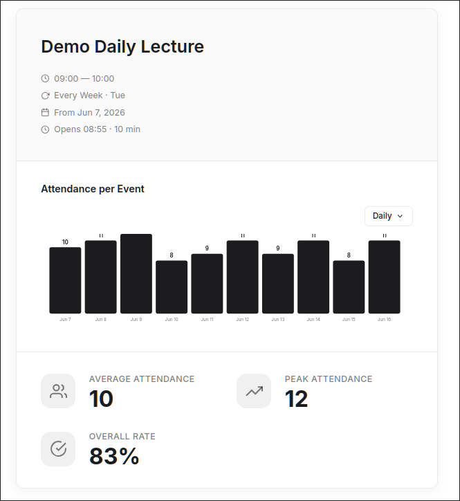
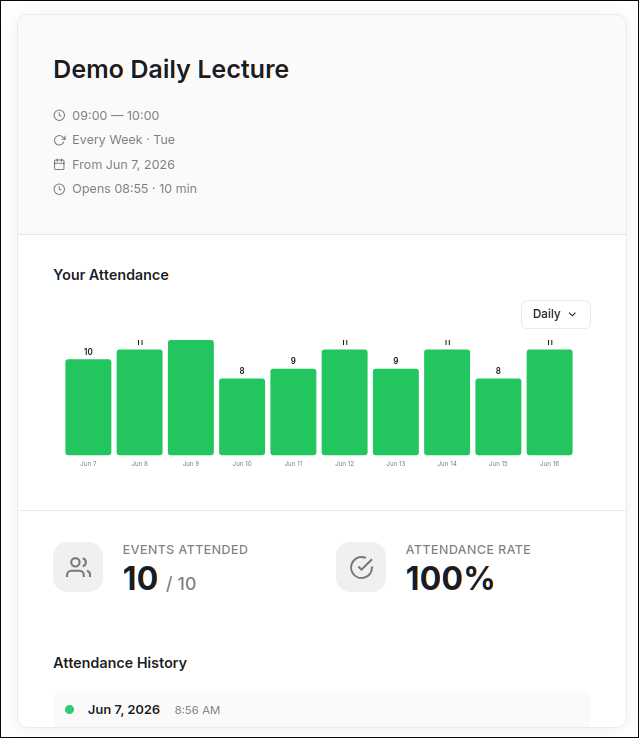

Backend services in Spring Boot, interactive games, and automation.
Obsessed with clean architecture, creative problem‑solving, and
things that feel alive.
Spring Boot·Java·Game Design·REST APIs·Python·TypeScript·Angular·MySQL·SQL·Docker·Godot·Linux·Sass·Git·Clean Architecture·
01 — About
Engineer, tinkerer, game‑lover
I'm an Informatics graduate from Ovidius University (2026),
with a Bachelor's exam grade of 9.50/10. I spend my time building efficient backend
services and interactive applications — driven by creative problem-solving and a love for
clean, maintainable architecture. Whether it's a rogue-lite train, a digital twin,
or an attendance system that can't be spoofed, I care about the idea
behind the code just as much as the code itself.
Backend services
Spring Boot, REST APIs and data modelling that scale without drama.
Game development
Juicy interactions and procedural systems — pure Java, no shortcuts.
Automation & AI
Automating the boring, prototyping the impossible — one node at a time.
9.50Bachelor's exam grade
10+projects shipped
∞curiosity
02 — Toolbox
Languages & frameworks
Languages
Java
Python
JavaScript
TypeScript
Angular
MySQL
SQL
Tools & Frameworks
Spring
Git
HTML/CSS
REST APIs
Sass
Docker
Godot
Linux
03 — Work
Selected projects
Games, automations, AI experiments, and a second brain — 11 projects and counting.
pressync.local




Wi-Fi · Attendance
PRESSYNC
An automated attendance system that operates over Wi-Fi — only devices within the local network can be marked present, elegantly solving the geolocation spoofing problem.
The idea
Attendance you can't spoof — your presence is proven by being on the network.
A second brain that learns you. Feed MEAI conversations and it parses them into a local knowledge graph — then answers questions in first person, as you, from the memories you've given it.
The idea
Talk to your own clone — MEAI ingests conversations, builds a personal graph, answers as you would.
A weather-aware virtual wardrobe. FITTERZ picks outfits by color matching, occasion, and destination — and dresses a mannequin with your own pieces so you see the fit before you wear it.
The idea
Let the closet decide. Color-matched, occasion-aware outfits from clothes you own — previewed on a mannequin.
A legal document automation platform that generates templated documents with dynamic field insertion — template management and PDF generation without the manual grind.
The idea
Legal documents that fill themselves in — templates, dynamic fields, one click.
A terminal productivity suite built to work best with AI agents. TaskWatch+ is a task tracker, project planner, and a shared memory space — agents read and drop context about projects, milestones, and progress in one place.
The idea
One brain for you and your agents — plan tasks, track milestones, study with stats, share memory across every agent you run.
A highly PvE-based rogue-lite where the action unfolds on an infinite, endless train — procedurally generated carriages, relentless enemies, and escalating challenges with every passing car.
The idea
Endless procedural carriages. Every door you open makes it harder — survive as long as you can.
A clicker game built entirely in Java Swing — focused on stunning animations and high replayability. Every click brings monsters to life with fluid, expressive visuals.
The idea
Every click wakes a monster. Pure juice, expressive animation, and a loop you can't put down.
A router firmware flashing tool for the D-Link DIR-882. Automates the OpenWrt flashing process, installs a custom captive portal (OpenNDS), and manages configuration via SSH.
ANIWA recommends what to watch next from what you've already watched — factoring in how much time you have and how you want to watch (background or active), so the pick fits your mood.
The idea
Painless picks that know your time and mood — background noise or full attention, ANIWA finds the match.
An app to bring your body back into place — gain or lose weight, drink more water, or reset your sleep schedule. RESSYNC tracks sleep, hydration, eating, and habits, coaching you back to baseline.
The idea
Reset your body, one habit at a time — sleep, hydration, nutrition, routine back in sync.
A shared marketplace for small businesses. LISTIT automates the painful parts — stock management synced across platforms and smart notifications — while acting as a middleman to prevent scamming.
The idea
One storefront, every platform. Inventory that syncs itself, notifications that matter, a middleman that kills the scams.
Digital productivity, AI tools (Copilot, prompt engineering), cloud collaboration (Microsoft 365, Google Workspace), cybersecurity fundamentals, IoT, and Big Data.
Prompt engineering, AI image/video generation, NotebookLM, data science, AI agents, VR/360 cameras, and 3D mapping.
NGO
Antreprenoriat Social
Team4Excellence — 2023
Social entrepreneurship certification earned while volunteering — 12 months of non-formal education, Erasmus+ project support, youth work, and digital inclusion workshops in Constanța.
05 — Contact
Let's build something cool together
Open to internships, collaborations, and interesting problems. My inbox is always open.